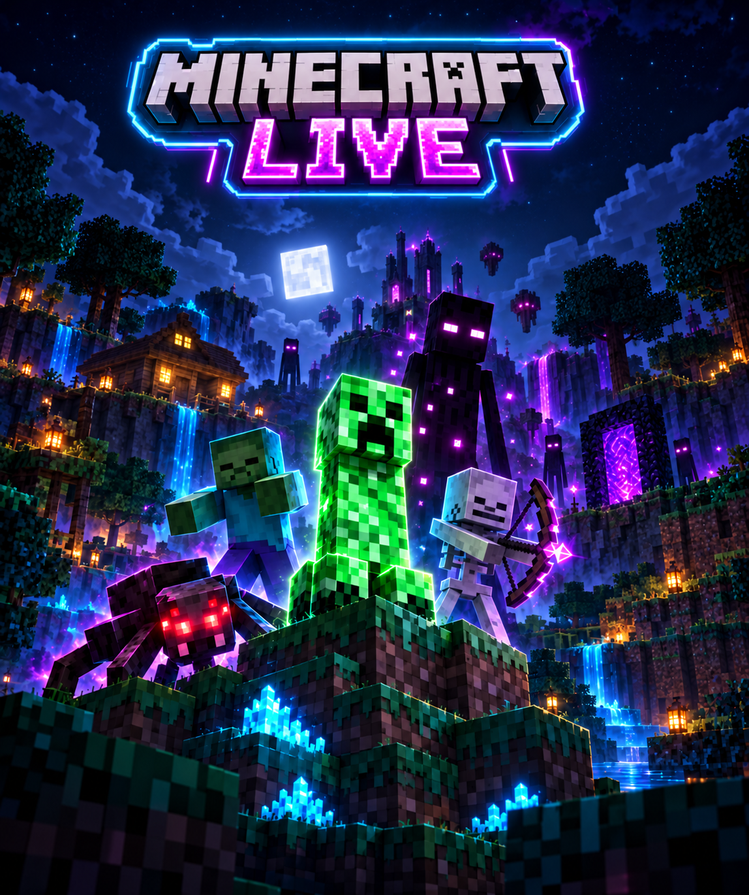

Tương tác cơ bảnMỗi tương tác sẽ tạo mob trong Minecraft!
Đã dừng
Tự động lưu

MINECRAFT LIVE CONTROL
Panel tương tác trực tiếp
Quà tặng đặc biệtGửi quà để nhận vật phẩm giá trị trong Minecraft!
TƯƠNG TÁC
Mob theo sự kiện
Chọn mob, số lượng và giới hạn ngay trong từng nhóm.
Mob mang tên người vào LIVE hoặc tương tác. Lặp lại theo thời gian hiện diện ước lượng; không có danh sách đầy đủ người rời phòng. Ngừng theo dõi sau 5 phút không nhận tín hiệu của người đó (hoặc chu kỳ + 90 giây nếu dài hơn). Người chỉ xem im lặng có thể không được nhận diện.
Giới hạn tính riêng theo tài khoản và loại tương tác. Hai người gửi cùng lúc đều được tạo mob; người này đang chờ không khóa người khác.
KÉO VÀ THẢ
Ghép quà với phần thưởng
Danh sách đã gán
Không giới hạn số dòng · kéo để đổi thứ tựChưa có quà. Nhấn “Thêm quà” hoặc kéo quà từ cột trái vào đây.
CÀI ĐẶT
Mod, hiển thị và đọc bình luận
Mọi thay đổi được tự động lưu sau 1 giây. Giới hạn mob và quy tắc tương tác đồng bộ hai chiều với F8 → Cài đặt TikTok Mob trong game, không cần dừng LIVE. Đổi cổng cần mở lại Minecraft; đổi tài khoản hoặc giọng đọc cần Dừng → Chạy LIVE.
Kết nối
Giới hạn và thời gian
Giới hạn số lượng và vòng đời chỉ áp dụng mob tương tác thường. Mob donate không tính vào giới hạn, không hết hạn và không tự biến mất; vẫn nhận sát thương và có thể chết. Khoảng sinh tính bằng block; độ cao âm là dưới chân người chơi.
Hàng đợi thông báo trên màn hình
Mỗi tương tác chiếm một lượt chờ. Donate ưu tiên sẽ hiện sau lượt đang phát, trước lượt thường; khi đầy sẽ thay lượt thường cuối hàng. Màu mặc định cam, thường 1,5 giây và donate 4 giây. Tắt ưu tiên để xếp lượt mới theo thứ tự đến.
Nội dung và loại tương tác được hiển thị
Các nút hiển thị chỉ điều khiển thông báo. Giới hạn tạo mob vẫn áp dụng. Nội dung dài tự thu nhỏ để vừa màn hình Minecraft.
Cách hiển thị từng loại tương tác
Chọn kiểu cũ, giữa màn hình hoặc text chat trong game. Các vị trí cũ được giữ lại khi đổi kiểu. Cấu hình tự động lưu; GIF cảm ơn quà vẫn dùng thiết lập riêng.
Vị trí thông báo trên màn hình
Sửa từng dòng hoặc tick các loại cần áp dụng cùng vị trí. Ngang: 0% trái → 100% phải; dọc: 0% trên → 100% dưới. Có thể kéo thông báo trong khung xem thử.
Khung game 1920 × 1080 (16:9)
Comment mẫuTên người dùng

Phần thưởng và hiệu ứng
Phần thưởng mặc định
Chỉ áp dụng cho quà chưa gán. Quà có trong danh sách dùng phần thưởng riêng, không nhận thêm phần thưởng mặc định. Đổi cài đặt: Dừng → Chạy LIVE.
Quà vật phẩm vào túi vô hạn, giữ khi chết và khi mở lại world. Nhấn B trong game hoặc bấm icon ở góc dưới phải màn hình hành trang để mở. Chỉ lấy ra; đồ đã lấy ra chịu luật mất đồ của world. Enchant, hồi phục và mob áp dụng trực tiếp.
Giọng đọc bình luận
Đọc trực tiếp bình luận tiếng Việt bằng giọng Hoài My hoặc Nam Minh. Chọn Hoài My rồi tăng cao độ để tạo giọng nữ cao, dễ thương. Cần Internet; không cần API key hoặc mở VOICEVOX.
Nếu chưa có khóa ElevenLabs, bình luận sẽ được đọc bằng giọng Việt miễn phí (cần Internet).
Đang tải danh sách giọng và model…
Cài đặt tự lưu. Bấm Test để nghe thông số vừa chỉnh; nếu bridge LIVE đang chạy, dừng/bật lại bridge để áp dụng cho bình luận mới.
Hàng đọc bình luận
Mob theo tương tác, số lượng và chống spam
CẢM ƠN QUÀ
VOICEVOX & GIF
Nhận quà → hiện GIF và avatar trong Minecraft → đọc câu cảm ơn tiếng Nhật đã chọn. Mỗi combo hoàn tất được cảm ơn một lần, kèm tổng số quà; áp dụng cả quà chưa gán phần thưởng. Comment vẫn dùng giọng riêng trong Cài đặt.
Giọng cảm ơn VOICEVOX
Giọng anime Nhật cao, dễ thương: thử Zundamon hoặc các nhân vật khác trong danh sách. Engine đi kèm dự án sẽ tự mở khi bấm Tải giọng / Test. Nếu chưa cài, chạy CAI_VOICEVOX.bat một lần (tải khoảng 1,8 GB), hoặc cài và mở VOICEVOX cho Windows. Không cần API key. Giọng này chỉ dùng đọc lời cảm ơn quà.
Bấm Tải giọng để tự mở engine và tải những giọng đã cài.
Có thể chọn nhân vật trong danh sách hoặc nhập ID giọng trực tiếp. Câu cảm ơn và GIF chọn ngẫu nhiên độc lập; không đổi giọng comment.
GIF & avatar người tặng

TTên người tặng TikTokHoa Hồng ×3
THANKIU ONICHANN~~Kéo thông báo trong khung để chỉnh vị trí. 0% là trái/trên, 100% là phải/dưới; thay kích thước sẽ phóng cả GIF, avatar và chữ. Khung theo tỷ lệ Minecraft; ảnh xem thử là mẫu.
Thông báo dọc, nền trong suốt, được vẽ trực tiếp trong Minecraft (kể cả toàn màn hình và Game Capture). Cần cài mod mới, mở world và bật HUD. Avatar thật lấy từ người tặng; nếu thiếu/lỗi ảnh, hiện chữ đầu tên.
Từng lượt hiển thị tuần tự, ít nhất đủ thời gian đọc. Khi hàng đầy chỉ bỏ lượt cảm ơn mới, phần thưởng trong game vẫn được xử lý.
Tự lưu sau 1 giây. Dừng → Chạy LIVE để áp dụng thay đổi. Test không tạo vật phẩm hoặc mob.
KIỂM THỬ
Triệu hồi, spam và quà tặng
Mở world Minecraft có mod để nhận lệnh. Không cần bật TikTok LIVE. Test gửi trực tiếp theo cấu hình hiện tại, bỏ qua bước chờ tim và chống spam của bridge; giới hạn mob trong game vẫn áp dụng.
Chưa chạy bài test
Thông số cho test mob / quà
Mỗi lần chạy dùng ID người thử mới. Các lượt của cùng một người dùng chung ID để kiểm tra giới hạn mob/người.
Triệu hồi từng mob
Mỗi lượt tạo một mob đã chọn. Với test tương tác bên dưới, số mob mỗi lượt lấy theo cấu hình của Like / Comment / Share / Follow.
Test từng tương tác hoặc full spawn
Spam triệu hồi nhiều người
Test từng quà đã gán
Mỗi lượt gửi đúng phần thưởng và số lượng của quà, kèm thông báo donate ưu tiên.
Nhật ký kiểm thử
Số lệnh gửi thành công không phải số mob còn sống. Dừng test chỉ ngừng gửi thêm; lệnh đã gửi và mob đã tạo vẫn do Minecraft xử lý.
NHẬT KÝ